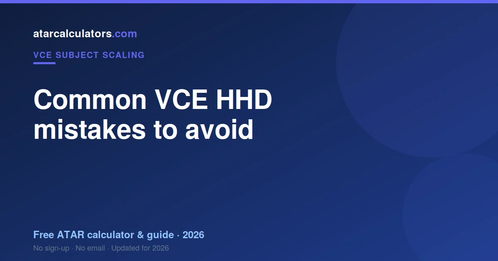
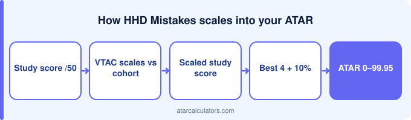

Most VCE HHD marks are lost to avoidable mistakes rather than gaps in knowledge: not answering the specific question, weak extended-response structure, a lack of examples or data, and describing instead of analysing. These are all fixable through applied practice, careful reading, and practising past exams against the marking criteria, which often lifts marks faster than more content.
Key takeaways
- Answer the specific question.
- Structure extended responses clearly.
- Support answers with examples and data.
- Analyse, do not just describe.
- Apply content to the question.
- Practise past exams under timed conditions.

Misreading the question
In Health and Human Development, misreading means answering with general health knowledge instead of the framework the question named.
Poor exam timing
HHD has substantial data-response work. Students who rush the interpretation lose marks that were sitting in the stimulus.
Neglecting SACs
HHD SACs test the same frameworks the exam does, in the same terms.
Ignoring examiner reports
VCAA HHD reports are precise about terminology and about using the data supplied. Sensible health statements that skip both earn nothing.
HHD-specific mistakes
In HHD specifically, students often lose marks by not applying content to the question, writing weak or unstructured extended responses, and describing instead of analysing.
So watch for these subject-specific traps, and practise avoiding them. Knowing where HHD students commonly slip lets you guard against the same errors.
Not using past exams
Past exams show which frameworks recur and how the data questions are built. Both reward rehearsal.
Weak exam technique
The technique failure in HHD is substituting intuition for the model. The subject reads as common sense and is not marked that way.
How to fix these mistakes
Fixing HHD mistakes means reproducing frameworks blank and applying them to unseen data under time.
See how your score scales
As you cut out mistakes and lift your score, our VCE HHD scaling calculator shows roughly how your score scales into your ATAR.
Treat the result as indicative, since scaling changes each year. Your study score is what your scaled score depends on.
A pre-exam checklist
A short checklist helps you avoid the common HHD mistakes on the day. Read each question twice and note the command word. Plan your time by the marks. Show working where needed, and attempt every question.
So go into the exam with these habits automatic. Most lost marks come from slips under pressure, not gaps in knowledge, so a clear routine keeps you from giving marks away.
Mistakes in SACs
The common HHD SAC mistake is intuition instead of the model. The subject reads as common sense and is not marked that way.
Turning mistakes into marks
The fastest way to lift your HHD score is often to fix mistakes, not learn new content. Review your past-exam errors, understand why you lost each mark, and practise that type of question again.
So treat every mistake as information. A mistake you understand and fix is a mark gained. This kind of review usually lifts your score faster than covering new material.
A timing plan for the exam
Give the data-response questions their time. The marks are sitting in the stimulus, and rushing loses them.
Common questions
What are the most common VCE HHD mistakes?
Common VCE HHD mistakes include misreading the question, poor exam timing, neglecting SAC preparation, and ignoring the examiner reports. In HHD, that often means not applying to the question and weak extended responses. Practising past exams and acting on examiner-report feedback is the fastest way to stop losing marks.
What loses marks in VCE HHD?
Students lose HHD marks mainly to avoidable errors: answering the wrong question, running out of time, weak SACs, and not writing to what the examiner reports reward, rather than gaps in knowledge.
How do I avoid errors in the VCE HHD exam?
Read each question carefully and note the command word, manage your time by the marks, practise past exams under timed conditions, and act on the examiner reports. Building these habits protects the marks you have earned.
What do VCE HHD examiners look for?
Examiners reward answers that do exactly what the question asks and meet the assessment criteria. In HHD, that includes applying content to the question, using examples and data, and clear extended-response structure. Reading VCAA’s examiner reports for HHD and marking your work against them shows you exactly what they reward.